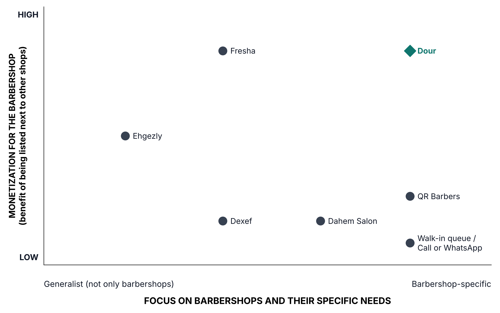

| Founder Name | Role | Deliverables & Sections Owned | % Contribution |
|---|---|---|---|
| Nooreldeen | CEO / Product owner | 1.1 Section 1 (Vision and Mission), Section 3 (Customer Discovery), Section 9 (Company Type and Founding Structure); Appendix A (Interview Log); Appendix B (Cap Table); Deliverable 1.2 (Business Model Canvas and Pricing Hypothesis) | |
| Abdelrahman | CTO | Technical deliverables | |
| Ahmed | COO | Operations deliverables |
Problem Description: The urban men's grooming sector in Egypt suffers from severe queue imbalances and operational blindness driven by intense loyalty to individual craftsmen rather than shop brands.
Who Has the Problem (Three-Sided Ecosystem):
Cost of the Problem:
Ideal Customer Profile (ICP):
3. End-User ICP (The Loyal / High-Intent Client):
Job-to-be-Done (JTBD) Statements:
To validate the core problem and test our initial hypothesis, we conducted 6 customer discovery interviews across both sides of the market: 4 on the supply side across two barbershops (2 barbers, 1 front-desk receptionist, and 1 owner) and 2 on the demand side with customers.
Following The Mom Test principles, we strictly avoided pitching our idea upfront and asked about specific, recent past behavior ("the last busy day", "the last time someone left"), not hypothetical opinions. Where answers were vague ("a lot"), we asked for concrete numbers and recent examples. Statements about future intentions were flagged as weak evidence. Interviews were conducted in Egyptian Arabic, framed neutrally as a GUC academic research project: "I'm a GUC student doing a project on barbershops. I'm not selling anything."
| Segment | Interviews | Setting / Profile |
|---|---|---|
| Barber | 2 | Shop 1 (multi-chair, front desk), Shop 2 (peer-managed, no front desk) |
| Front-desk receptionist | 1 | Shop 1 |
| Shop owner | 1 | Shop 1 |
| Customer | 2 | Customer 1 (loyal to a specific barber), Customer 2 (no preferred barber) |
Barbers (Shop 1 & Shop 2) 1. Tell me about the last busy day. How did you know whose turn it was? 2. Are there barbers people ask for by name? When was the last time people waited for one barber while others were free? 3. When was the last time someone left because the wait was too long? Do they come back, or go elsewhere? 4. Do customers call or WhatsApp you before coming? Roughly how many times a day? 5. Do you ever book someone an appointment? What happens if someone asks you to? 6. When customers call while you're working, how do you answer? 7. Has the shop ever used an app for bookings or the queue? What happened?
Front Desk (Shop 1) 1. Tell me about the last really busy day. How did you track the order? How many people called asking about a wait? 2. When someone calls about a specific barber, what do you tell them? 3. Have you ever taken reservations by phone? Why do you work first come, first served? 4. When you tell a caller the barber is busy, what does he do next?
Shop Owner (Shop 1) 1. When did someone last leave because the barber they wanted was busy? How many do you lose like that per week? 2. How much is a haircut? A beard? 3. Why did you choose no reservations? 4. Do you pay monthly for any software or app for the shop? 5. (Tested only at the very end) If we built a screen showing the wait for each barber, with no reservations and no line-skipping, would you try it?
Customers (Demand Side) 1. Tell me about your last haircut. When did you go, how did you choose that time, and how long did you wait? 2. Before going, did you call the barber or the shop? Why or why not? 3. When did you last leave without a haircut because of the wait? What did you do after? 4. Have you ever used an app to book anything? What happened?
Core Insight: The core problem is customer loyalty, not shop capacity: regulars wait for or leave one popular barber while other barbers sit idle.
| # | Finding | Field Evidence | Heard From |
|---|---|---|---|
| 1 | Demand bunches on 1–2 popular barbers while others are idle | Popular barbers have 2–4 people waiting. "Just now I was giving someone a haircut and another was waiting for me while the whole shop was free." | Barber 1, Barber 2, Owner |
| 2 | Customers walk out daily, and nobody counts it | Owner: walk-outs happen "always", number unknown. Some return later or the next day; some never return. | Barber 1, Barber 2, Owner, Customer 1 |
| 3 | Customers already use a manual workaround: calling to ask "are you free?" | 5–10 calls per busy day to the front desk; about 5 a day to one popular barber; regulars have barbers' phone numbers. | Front desk, Barber 1, Barber 2 |
| 4 | Customers who don't call just guess, and guess wrong | Customer 1 went in the morning "thinking he'd be free" and waited ~30 minutes. | Customer 1 |
| 5 | Both shops refuse reservations as strict policy | The owner's rationale is fairness: a customer who arrived first should not see a later arrival skip ahead. | Front desk, Owner, Barber 2 |
| 6 | Shops keep records by hand and pay for no software | Front desk logs every service per barber on paper; at Shop 2 another barber takes payment and logs the service (shop policy). | Front desk, Owner, Barber 2 |
| 7 | The wait-time pain belongs exclusively to loyal customers | Customer 2 has no preferred barber and waited 0 minutes. | Customer 2 |
| 8 | Phone and app habits already exist | Barbers answer phones during cuts. Both customers book padel or football courts by app; one also books doctors. | Barber 1, Barber 2, Customers 1–2 |
Willingness to Pay Reality Check: The owner stated, "Of course I'd even pay for a service like that," and was open to a free trial. We treat this as stated opinion rather than committed budget, since the shop currently spends nothing on software.
Invalidated Assumptions & Surprises:
Our primary assumption—that shops want customers to book a specific barber in advance—was invalidated. We pivoted our MVP from advance time-slot booking to live wait visibility.
| Assumption Before Interviews | What We Learned (Field Evidence) | What We Changed (Strategic Pivot) |
|---|---|---|
| Shops want customers to book a barber in advance | Both shops refuse reservations as policy. The owner says it is unfair to customers who arrived first. | MVP shows a live per-barber wait ("2 waiting for [barber], about 40 minutes") and never changes arrival order. Booking with a specific barber comes later, introduced shop by shop once owners see that visible bookings stay fair to walk-ins (see Section 1). |
| Long waits come from too few barbers | Waits come from loyalty: regulars wait for one barber while others are free. | Wait is shown per barber, not aggregated per shop. |
| All young male customers feel the pain | Customers with no preferred barber barely wait; they take whoever is free. | ICP narrowed to loyal customers who wait for one specific barber. |
| Customers who leave are lost for good | At Shop 2 most leavers ask "when will you be free?" and return then. At Shop 1 some never return. | Add queue alerts: The cost is wasted trips and delay as much as lost revenue. Added a "your barber's queue is short" alert. |
| Barbers would manage the app themselves | Shop 1 already has a front desk that logs every service on paper; Shop 2 delegates payment to a peer barber. | Dual staff logging: The front desk, or the designated cashier barber, marks services done. Auto-calculated totals per barber replace paper ledgers. |
| Barbers want customers to see their queue at all times | Barber 2 decides whether to take another customer based on how much energy he has left. | Queue control: Each barber gets an individual "open / close my queue" toggle control. |
Other Surprises & Limitations: * Operational Surprises: The owner has no idea how many customers he loses, and the front desk cannot tell whether a telephone caller later came in. At Shop 2, a peer barber takes payment and logs services to ensure internal control. * Methodological Limitations: Small sample (2 shops, 2 customers; 3 shop interviews from Shop 1). Customer 1 is the interviewer's brother (potential confirmation bias). Future willingness to pay is stated, not demonstrated. Revenue totals were withheld as confidential by Shop 1. * Next Discovery Cycle: Expand to at least 2 additional shops in other neighborhoods and arms-length customers to verify if the strict no-reservation policy and loyalty clustering hold universally.
(Full anonymized raw interview logs with verbatim translated quotes and surprises are provided in Appendix A: Full Customer Discovery Interview Log.)
Price used in both methods: EGP 1,000 per shop per month = EGP 12,000 per year.
Calculation: EGP 12bn × 5.6% × 10% = EGP 67.2M - EGP 12bn: Annual income of Egypt's barber sector, estimated at no less than EGP 12bn by the Cairo Chamber of Commerce's hairdressing division [1]. - × 5.6%: Share of a salon's revenue spent on what our product replaces: software for scheduling, POS and CRM (up to 0.6%) plus marketing to win customers which is offered by our marketplace exposure (up to 5%) [2]. - × 10%: Only licensed shops can subscribe; about 200,000 of at least 2 million salons are licensed [1].
Calculation: EGP 67.2M × 23.8% = EGP 16.0M - × 23.8%: We launch in Cairo (10.5M), Giza (9.9M) and Alexandria (5.7M), 26.1M of Egypt's 109.5M people [3].
Calculation: EGP 16.0M × 11.5% = EGP 1.85M - × 11.5%: Share of SAM captured by Year 3, from the capture plan below (154 shops × EGP 12,000 ÷ SAM).
Calculation: 6,853 shops × EGP 12,000 = EGP 82.2M - 6,853: Men's barbershops listed with an address and phone in Egypt's Yellow Pages, summed across governorates: Cairo 3,037, Giza 2,519, Qalyubia 540, Alexandria 283, Menoufia 198, Sharqia 74, Kafr El-Sheikh 61, Dakahlia 59, Damietta 42, Fayoum 40 [4].
Calculation: 1,330 shops × EGP 12,000 = EGP 16.0M - 1,330: Barbershops with a Google Maps business profile in Cairo (632), Giza (475) and Alexandria (223), meaning they already use technology [5].
Calculation: 154 shops × EGP 12,000 = EGP 1.85M - 154 shops: From the capture plan below.
| Year | Sales effort | New shops | Lost (15% churn) | Active shops |
|---|---|---|---|---|
| 1 | 2 founders, Nasr City and New Cairo | 2/month = 24 | — | 24 |
| 2 | + 1 sales rep, add Giza | 4/month = 48 | 4 | 68 |
| 3 | + 2nd sales rep, add Alexandria | 8/month = 96 | 10 | 154 |
| Top-down | Bottom-up | Gap | |
|---|---|---|---|
| TAM | EGP 67.2M | EGP 82.2M | 18% |
| SAM | EGP 16.0M | EGP 16.0M | <1% |
| SOM | EGP 1.85M | EGP 1.85M | — |
Egypt has a huge, recurring market for men's grooming, yet barbershops still run on walk-ins, phone calls and WhatsApp. Customers waste time waiting, and shops lose income from no-shows and idle chairs. Meanwhile, Egyptians already book and pay through their phones for rides, food and doctor visits. Existing booking platforms are generic or foreign and charge commissions on new customers instead of being built for local barbershops, which leaves a clear gap. We fill it with a simple, barber-focused live queue, POS and marketplace app that brings organized, predictable visits to a market that is ready for it.
(Market sizing sources, citations, and reference links are detailed in Appendix D: Market Sizing Sources & Citations.)
| Tier | Competitor | What it does | Why this tier |
|---|---|---|---|
| Direct | Ehgezly [1][2][3] | Egyptian app where customers browse shops and book beauty services, including a barber category. Shops get a dashboard for bookings, calendar, team and revenue. | Customers can choose any listed barbershop and book. |
| Direct | Fresha [9][10] | Global salon marketplace and shop software. 28 barbers listed in Egypt. Customers pick a barber and a time slot online. | Customers can choose any listed barbershop and book. |
| Indirect | QR Barbers [15] | Cairo-built barber booking app where each shop gets its own booking service. | Booking for one shop at a time. Customers cannot compare shops. |
| Indirect | Dahem Salon [16] | B2B system with a men's barbershop edition: appointments, waitlist, chair status, commissions, customer records. | The shop gets its own booking link. No cross-shop marketplace. |
| Indirect | Dexef [17] | Accounting, ERP and POS vendor with salon software: scheduling, commissions, customers, POS, inventory. | B2B accounting and POS. No customer platform. |
| Substitute | Walk-in queue [18] | Customer arrives and waits for a turn. | Barber does no online booking. |
| Substitute | Call or WhatsApp [19] | Customer and barber agree a time by message or call, and the barber confirms manually. | Barber does no online booking. |
| Ehgezly | Fresha | |
|---|---|---|
| Summary | Egyptian app where customers book beauty and wellness services: barbers, hair and nails, laser, makeup, massage, pet services [1]. The barber category lists 9 shops, all in New Cairo (7 brands; La Casa and Luka each have 2 branches) [2]. Shop owners get a dashboard for bookings, calendar, team and revenue [3]. | London-based global booking marketplace plus shop software [12]. Egypt barber page: 28 barbers and 10 professionals in Cairo, Giza, Ismailia and Damietta, with an average rating of 4.0 from 9,892 reviews [9]. Customers pick a specific barber or any professional and book in 5-minute slots [10]. |
| Target customers | Customers: people in Cairo booking beauty services [2]. Shops: barbershops, salons and clinics [3]; its FAQ says any small business [4]. | Customers: people searching for local services [9]. Shops: salons, spas, barbershops, solo barbers and small teams [14]. Direct sales for large multi-branch businesses [12]. |
| Product or service pricing | Customers pay the shop's listed price in EGP. Haircuts range from 150 to 290 EGP, and 6 of 9 shops charge 250 [2]. Shop-side fees, commission and subscription are not published [3][8]. Refunds take 5 to 7 business days under the shop's policy [4]. | Customers pay the shop's listed price in EGP. Haircuts range from 80 (Gedo Salon) [9] to 320 (Shad's Men's Salon) [10]. Shops pay (USD list prices) [11]: Independent USD 19.95 a month; Team USD 14.95 per barber a month; online card payments 2.79% + USD 0.20; in-person 2.29% + USD 0.20; a 20% one-time fee (minimum USD 6) on each new customer found through the marketplace. Booking through the shop's own link, Instagram or Facebook is free [11]. Whether Egypt shops are billed in EGP is not stated [11]. |
| General marketing strategy | Almost no public marketing so far. Shop-side pitch: "Goodbye WhatsApp chaos", "fill empty hours" with 24/7 booking, "get paid automatically" [3]. Free onboarding in Arabic and English, Cairo phone support (Sat to Thu, 10:00 to 20:00), WhatsApp chat, AI assistant [3][5]. Positions itself as built in Egypt [3]. | Free-to-start pitch, with paid plans added in 2025 [12]. The marketplace brings new customers and Fresha charges a fee on the first booking only [11][12]. Creator posts with working stylists and barbers. Claims shops get 26% more customers and a 392% return (third-party study, not independently checked) [12]. Self-serve sign-up with a 7-day trial for small shops [11][12]. |
| Online marketing strategy | Instagram: 11 followers [6]. Facebook: 1 follower, one post, 0 reviews [7]. A blog page exists; posts not read [1]. Website and apps are the main channel [1]. | Heavy Google advertising: about 2,000 Search ads, with automated per-shop ads in several languages [12]. Instagram about 80,000 followers; TikTok and LinkedIn active; no active Meta or TikTok ads [12]. Arabic platform live since 2025 [13]. Middle East push targets the Gulf (Dubai and Saudi teams; Qatar, Oman and Kuwait next), and Egypt is not mentioned [13]. |
| Strengths | Egyptian company with local support in Arabic and English [3][5]. Prices in EGP [2]. Online payment at booking and refunds [3][4]. Reminders and reviews [3]. Dashboard for bookings, team and revenue [3]. | Large review base in Egypt: Rashed's Studio 3,205 reviews, Shad's Men's Salon 1,691, Gedo Salon branches 356 to 1,392 [9][10]. Customers choose barber and slot online [10]. Full toolset: waitlist, deposits, POS, memberships, reports [14]. Strong global brand [12]. |
| Weaknesses | Few barbers: 9 in one area [2], though its partner form says "thousands of shops" [8]. Not barber-focused: pet clinics and women's salons sit on the same app [2]. Almost no social following [6][7]. Deposit and no-show rules not stated [3][4]. | The 20% fee on new customers plus processing fees add up [11][14]. No Egypt-specific marketing found [13]. Phone support is a paid add-on on the Independent plan [14]. Not barber-specific [9]. |
| Competitive advantage | Local: Egyptian team, EGP, Arabic and Cairo-hours support [3][5]. | Already has shops and thousands of reviews in Egypt, plus a complete product [9][10][14]. |
| ## Positioning Map |

Current options fall into three groups: general beauty platforms (Fresha, Ehgezly), single-shop booking tools (Dahem Salon, QR Barbers, Dexef), and the status quo (walk-ins, calls and WhatsApp). None of them combines the three points below.
Every listing is a men's barbershop. Fresha and Ehgezly list barbers next to salons, spas and other categories, and single-shop tools only show one shop. Here, customers looking for a barber compare barbershops only, and a shop is seen by people who are looking for exactly what it offers. Since it focuses strictly on barbershops, it aggregates barbershop supply far more effectively than generic beauty platforms, creating an irreplaceable vertical network effect. This unlocks higher monetization, organic discovery, and targeted marketing exposure for barbershops on top of the queue and management software.
Customers rate both the shop and the barber who cut their hair. In a barbershop, people choose the barber, so a skilled barber builds his own reputation and attracts customers by name. On general platforms, reviews sit on the business profile, and single-shop tools have no public reviews. Shops with good barbers will be exposed and rewarded on a larger scale than just word of mouth. Also barbershops will be able to assess their staff and know who to keep and who to let go.
In Egypt, barbers often move between shops, and loyal customers follow the barber, not the shop. Each barber has his own profile with his ratings, photos of his work and his customers. If he moves to another shop on the platform, his reputation moves with him and his customers can find him. General platforms tie everything to the business, and single-shop tools lose the barber's history when he leaves.
Why it matters for barbershops: - Scouting proven talent. A shop owner can find skilled barbers on the platform by their real ratings and work, instead of hiring on word of mouth. - Hiring brings customers. A barber who joins a shop brings his reputation and his loyal customers with him, so the shop gains revenue from day one. - Lower hiring risk. The owner sees a barber's track record before hiring him, not after.
Since there is no platform for barbers only, this can be something completely new for barbershops and customers. It helps them with live queue visibility and streamlined front-desk logging (with advance booking unlocked once fairness is established), reducing lost profits from clients who leave because of traffic. In addition, the platform offers monetization and exposure to barbershops, helps with talent acquisition, and rewards shops that have high-quality barbers, helping in marketing and human resources operations for barbershops. This combination is not offered anywhere in Egypt which is exactly why our product stands out.
Once a barbershop runs on the platform, leaving means losing what it has built:
Why it protects us: a competitor would have to offer a shop enough to make up for losing its reputation, its booking customers and its history, which is very hard to do.
The platform gathers both sides of the market in one place: many barbershops (supply) and a large customer base (demand).
Why it cannot be copied: a competitor can copy the features, but not the network. A new platform starts with no shops, no customers and no reviews, and has to compete with a platform that already has supply and demand. No shop wants to move first and lose its customers, and no customer wants to move first and find few shops. Gathering both sides from scratch takes years and a large budget.
Following the three-part framework from market analysis (Survey predicts, Process improves, Behaviour proves):
"How would you feel if you could no longer use this platform tomorrow?"
(A) Very disappointed | (B) Somewhat disappointed | (C) Not disappointed
4. Pull Signals:
Target Thresholds:
To test this, the MVP is deployed across 2–3 busy multi-chair barbershops (3–8 chairs) in New Cairo and Nasr City over a 4-week pilot, focusing strictly on the operational queue loop and paper replacement before building out the wider marketplace.
What is IN the MVP:
What is OUT of the MVP (Deliberately Deferred):
Pilot Pass/Fail Metrics:
Feature Prioritization (Top 20 Features):
| # | Feature Name | Target User | MoSCoW | Kano Category | Why It Matters |
|---|---|---|---|---|---|
| 1 | Quick walk-in entry (<15s) | Front Desk / Cashier | Must-Have | Basic | Replaces paper notebook; must be faster than handwriting or staff abandon it during peak hours. |
| 2 | One-tap chair seat and finish toggles | Front Desk / Cashier | Must-Have | Basic | Frees chairs and updates the live queue with one touch; keeps staff hands-off clunky menus. |
| 3 | In-shop waiting room TV screen | Waiting Clients & Staff | Could-Have | Delighter | A luxury display that can wait. Customers check queue status on their phones, so a dedicated TV is not needed for launch. |
| 4 | Live per-barber queue tracker | Customer | Must-Have | One-Dimensional | Shows live wait per barber ("2 ahead, ~40 min"); eliminates blind waiting and stops walk-outs. |
| 5 | Barber queue pause/open toggle | Barber | Must-Have | Basic | Gives barbers control over physical fatigue and shift pacing so they can pause incoming clients. |
| 6 | Automated daily cut & cash ledger | Shop Owner & Cashier | Must-Have | One-Dimensional | Instantly sums daily cuts, services, and cash per barber; replaces manual paper accounting. |
| 7 | Real-time multi-device sync (<2s) | System / All | Must-Have | Basic | WebSockets keep front desk and customer phones in sync with no delay or double-booking. |
| 8 | SMS / WhatsApp proximity alerts | Customer | Should-Have | One-Dimensional | Alerts customer when 1 person is ahead so they arrive just in time without sitting in the lobby. |
| 9 | Deposit-backed advance slot booking | Customer & Shop | Should-Have | One-Dimensional | Collects 30–50 EGP deposit via InstaPay/wallet to guarantee slot and eliminate no-shows. |
| 10 | In-app checkout with deposit deduction | Front Desk & Customer | Should-Have | Basic | Built directly into tablet with no dedicated POS needed; automatically deducts prepaid deposit from final bill. |
| 11 | Dynamic service duration buffers | Front Desk & Customer | Should-Have | One-Dimensional | Sizes slots by service (30m hair, 20m beard) with small buffers to prevent floor bottlenecks. |
| 12 | Verified dual-axis review system | Customer, Shop & Barber | Should-Have | Delighter | Review prompt unlocked only after completed cut ticket, rating Shop Ambiance (1–5) and Barber Skill (1–5). |
| 13 | Barber portable profile & social showcase | Barber & Customer | Should-Have | Delighter | Barber portfolio with verified cut stats, skill tags, and Instagram/TikTok transformation video links. |
| 14 | Late arrival 10-minute grace release | System & Front Desk | Could-Have | Basic | Auto-releases an advance slot to walk-ins if customer is >10 min late, forfeiting the deposit. |
| 15 | Barbershop discovery & geo-search directory | Customer | Could-Have | One-Dimensional | Search and filter barbershops by neighborhood (New Cairo, Nasr City), price, and live wait time. |
| 16 | Smart cut-cycle reminder engine | Customer & Barber | Could-Have | Delighter | Automated reminder sent every 2–4 weeks based on past haircut frequency to bring customers back. |
| 17 | Automated monthly SaaS billing | Shop Owner & Platform | Could-Have | Indifferent | Recurring billing system charging 1,000 EGP/month subscription to shop owners. |
| 18 | Multi-chair shop owner analytics | Shop Owner | Could-Have | One-Dimensional | Dashboard tracking saved walk-outs, chair utilization rates, and barber revenue. |
| 19 | AI dynamic wait prediction | Customer & System | Won't-Have | Delighter | Machine learning model predicting wait times; deferred because fixed service buffers work well enough. |
| 20 | Retail product inventory & stock tracking | Shop Owner & Platform | Won't-Have | Indifferent | Tracking shelf retail products (waxes, oils); hard to implement with zero early payoff since services drive >95% of revenue. |
```mermaid flowchart LR subgraph NOW["NOW: Months 1–3 (Q1)"] direction TB N1["Operational Core & Live Queue MVP"] N2["Front-Desk Tablet Quick Logging (<15s)"] N3["Consumer Web Live Queue Tracker"] N4["Barber Queue Pause / Open Control"] N5["2–3 Pilot Shops Validated"] end
subgraph NEXT["NEXT: Months 4–6 (Q2)"]
direction TB
X1["Commercial Rollout: 6–8 Active Shops"]
X2["Payment Gateway for 30–50 EGP Deposits"]
X3["In-App Checkout Deposit Deduction"]
X4["Automated WhatsApp / SMS Arrival Alerts"]
X5["1,000 EGP/mo B2B Paid Subscription"]
end
subgraph LATER["LATER: Months 7–12 (Q3-Q4)"]
direction TB
L1["Year 1 SOM Target: 20–24 Active Shops"]
L2["Consumer Marketplace Discovery Directory"]
L3["Barber Portable Identity & Video Portfolios"]
L4["10–15% Marketplace Commission Launch"]
L5["Cut-Cycle Automated Reminders (2–4 wks)"]
end
NOW --> NEXT --> LATER
```
NOW: Months 1–3 (Q1) — Live Queue & Operational Core (MVP Validation)
NEXT: Months 4–6 (Q2) — Commercial Onboarding & Deposit Engine
LATER: Months 7–12 (Q3–Q4) — Marketplace Discovery & Reaching Year 1 SOM
Why venture-scale, not an SME or lifestyle business:
Founding Roles: (Including Product Owner) | Founder | Role | Owns | | :--- | :--- | :--- | | Nooreldeen | CEO / Product owner | Vision, product decisions and the MVP scope, customer discovery, fundraising. Owns product. | | Abdelrahman | CTO | Technical architecture, real-time sync backend, front-desk tablet web app, and consumer mobile web app | | Ahmed | COO | Shop partnerships, onboarding barbershops, operations and support, the next rounds of interviews |
Product Owner Designation: Nooreldeen owns product because Nooreldeen ran the customer discovery and turned it into product decisions: the move from booking to a live per-barber wait, and the narrower ICP of loyal customers.
Founder–Market Fit: We are three GUC students building a software company, and our roles cover the three things it must do well: understand barbershops, build the product, and win shops. Nooreldeen (CEO) has already done the field work: he ran all six discovery interviews across two barbershops, on both the shop and customer side, and turned them into the product's direction. Abdelrahman (CTO) led this milestone's technical deliverables and will build the front-desk tablet web app, consumer mobile web app, and real-time backend. Ahmed (COO) led this milestone's operations deliverables and will run shop partnerships, onboarding and support. Our gap: we are full-time students, so our time is limited, especially during exams, and none of us knows yet how to register a company in Egypt or legally collect monthly subscriptions from shops. We close the first by keeping the pilot small (2–3 shops) and planning the heavy work around the semester, and the second by getting advice from a lawyer and from GUC’s startup support before we register, and by using a licensed local payment provider to collect the subscriptions.
Equity Split & Vesting Schedule: (e.g., 4 years with 1-year cliff)
| Holder | Shares | Ownership | Vesting |
|---|---|---|---|
| Nooreldeen (CEO / Product owner) | 3,500,000 | 35% | 4 years, 1-year cliff |
| Abdelrahman (CTO) | 3,000,000 | 30% | 4 years, 1-year cliff |
| Ahmed (COO) | 2,500,000 | 25% | 4 years, 1-year cliff |
| Employee option pool | 1,000,000 | 10% | Set per hire |
| Total | 10,000,000 | 100% |
(See Appendix B: Cap Table & Founders' Agreement for detailed monthly vesting calculations, pre-seed dilution modeling, and cap table template references).
IP Assignment: Every founder signs an IP assignment agreement that transfers to the company everything they create for it:
This means no founder can leave and take the product with them, and investors can see that the company owns what it sells.
All interviews were conducted on October 31, 2026 by Nooreldeen (CEO). Names, shop names, and phone numbers are withheld for privacy. Contact details for interviewees who agreed to verification are held privately by the interviewer.
| # | Date | Role / Segment | Interviewer | Key Past Behaviour | Numbers | Key Quote (Translated) | Surprise |
|---|---|---|---|---|---|---|---|
| 1 | 31 Oct 2026 | Barber, Shop 1 (has front desk) | Nooreldeen (CEO) | First come, first served, with a separate wait for specific barbers. Front desk logs every service per barber. Regulars call or message barbers directly. Answers phone during cuts. | Walk-outs daily. Popular barbers have 2–4 waiting while others are free. | Regulars wait for their barber "while the rest of the barbers are free" | Demand bunches on 1–2 barbers. Shop has never used a booking app. |
| 2 | 31 Oct 2026 | Front-desk receptionist, Shop 1 | Nooreldeen (CEO) | Strict first come, first served. Customer queue plus a barber rotation. Logs every service on paper. Regulars call barbers directly. | 5–10 calls per busy day asking whether a specific barber is free. | "If someone called me and came later, I don't know if it's who called me" | Reservations are against shop policy and were never tried. |
| 3 | 31 Oct 2026 | Owner, Shop 1 | Nooreldeen (CEO) | No reservations, for fairness. Pays for no software. All calculations done by the front desk on paper. | Haircut 120 EGP, beard 70 EGP, both 170 EGP. Walk-outs "always", uncounted. | "Of course I'd even pay for a service like that" | Does not measure his own losses. Open to a free trial (stated, not committed). |
| 4 | 31 Oct 2026 | Barber, Shop 2 (no front desk) | Nooreldeen (CEO) | Barbers manage the order. Another barber takes payment and logs the service (policy). No reservations (policy). Leavers ask when he'll be free and return then. | About 5 calls or messages a day to him. Walk-outs "a lot". | "Just now I was giving someone a haircut and another was waiting for me while the whole shop was free" | Decides whether to take another customer based on his remaining physical energy. |
| 5 | 31 Oct 2026 | Customer, 18–35, loyal to one barber (family member) | Nooreldeen (CEO) | Went in the morning guessing his barber would be free. Sometimes calls ahead, sometimes not, though he has the number. Books padel and football courts by app. | Waited about 30 minutes 2 days earlier. Walked out about a month ago with 2 ahead; returned the next day. | "I went thinking he'd be free" | Has the barber's phone number but doesn't reliably call ahead. |
| 6 | 31 Oct 2026 | Customer, 30, working professional, no preferred barber | Nooreldeen (CEO) | Went after work last week (his only free time) before a conference the next day. Didn't call. Takes whoever is free. Books padel courts and doctor appointments by app. | Waited 0 minutes. | "I don't have a specific barber, whoever's free" | Had a preferred barber when younger and stopped caring. Says he'd find another barber rather than wait (hypothetical). |
The filled cap table is in Cap Table - Founding Structure.xlsx, built on the course template. It has the Cap Table, Founders and vesting, Funding Rounds (none raised yet), a hypothetical 10% pre-seed dilution scenario, and a Summary. Reference: Cap table template, The Startup Project.
| Holder | Shares | Ownership | Vesting Schedule | Role Rationale |
|---|---|---|---|---|
| Nooreldeen (CEO / Product owner) | 3,500,000 | 35% | 4 years, 1-year cliff | Makes the final product and company decisions, and leads fundraising. |
| Abdelrahman (CTO) | 3,000,000 | 30% | 4 years, 1-year cliff | Builds the core product; the hardest role to replace. |
| Ahmed (COO) | 2,500,000 | 25% | 4 years, 1-year cliff | Brings in and keeps the shops. |
| Employee option pool | 1,000,000 | 10% | Set per hire | Set aside to hire early employees, at the low end of the usual 10–20% range. |
| Total | 10,000,000 | 100% |
No investors yet. If we later sell 10% in a pre-seed round, every holder is diluted by the same proportion, and founders go from 90% to 81% together (Dilution Scenarios sheet).
Every founder signs an IP assignment agreement that transfers to the company everything they create for it: * All codebase, web applications (front-desk tablet app, consumer mobile web app), and backend systems * Designs, the brand name and the logo * The customer-discovery data: interview notes, the interview log and findings * Any work done before the company is incorporated
This means no founder can leave and take the product with them, and investors can see that the company owns what it sells.
In accordance with course guidelines, Generative AI tools (Claude and Google Gemini) were used to assist with Milestone 1 as summarized below:
| Tool | Purpose & Usage |
|---|---|
| Anthropic Claude | Brainstorming solution framing, drafting and refining deliverable text, formatting, and translating in-person interview notes. |
| Google Gemini | Desk research (Egyptian market statistics, competitor models), sanity-checking spreadsheet formulas (Cap Table & TAM/SAM/SOM), and structuring tables. |